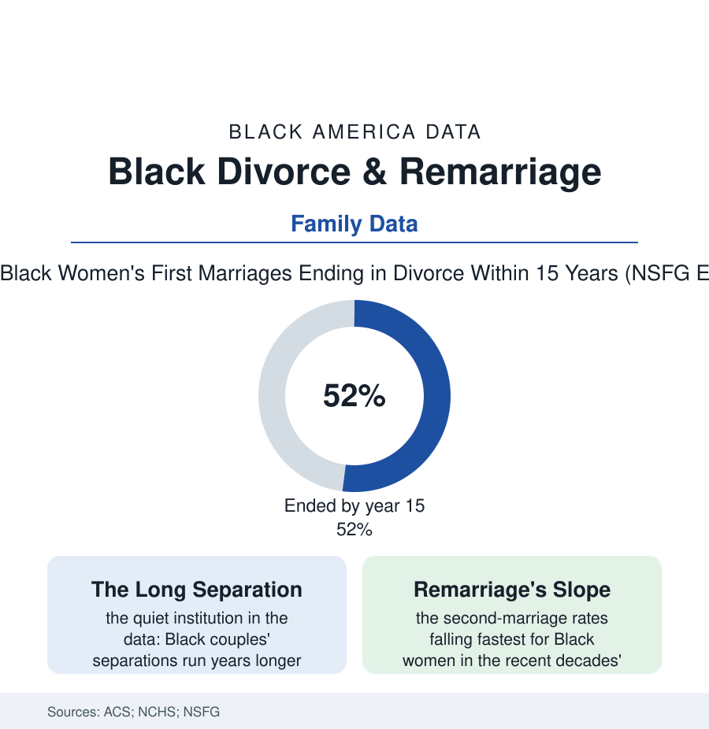

Black Census
Uncoupling: Divorce, Separation, and Remarriage in the Black Data
Black marriages end at higher rates, separations last longer, and remarriage comes slower in the data — a file about what breaks, what lingers, and what the numbers miss.

The marriage file's companion is the ending: Black marriages dissolve at higher rates than white ones in the federal data — roughly half of Black women's first marriages ending within fifteen years in the National Survey of Family Growth's estimates, against about a third for white women — and the exits themselves have a distinctive shape: longer separations, slower divorces, rarer remarriages. This article reads the uncoupling file with the same care as the coupling one. It is also a file where the official numbers understate the phenomenon they name, because the census counts legal endings and the community has always known informal ones.
What the Dissolution Data Show
The predictors the demographers enter are the atlas's familiar ones, operating inside the household: income volatility (the earnings file's instability predicting dissolution in the longitudinal studies more powerfully than income's level — the marriage built on a variable paycheck stressed by the variance itself), unemployment spells (the male joblessness of the employment data's first table running through the divorce models as it runs through the marriage-formation ones), the custodial system's removals and returns (the hardest-hit households of the marriage article), education's asymmetries, and the early-marriage ages the formation data record (marrying younger predicting ending likelier in every cohort's table). The separation rows hold the file's most distinctive datum: Black couples separate as others do, but the legal divorce arrives years later or never — the 'separated' marital status in the census tables disproportionately Black and durably so, the demographers attributing the lag to divorce's costs (the filing, the lawyer, the property that cannot be cleanly split — the house underwater in the housing crash's Black Belt, the debts joint and unpayable), to the hope the church file counsels, and to the informal arrangements the extended family administers without a court's assistance. The status has consequences the data catch downstream: the separated-but-married locked out of remarriage and tangled in the benefits, taxes, and estates of a legal bond both parties have left — a population the family-law literature measures in the hundreds of thousands.
The Children and the Second Time
The children's file inside the divorce data is more hopeful than the headlines of either political tribe suggest: the family-structure research's best current reading (children's outcomes tracking conflict, income loss, and instability itself — the chronic transitions — more than the divorce event; the high-conflict intact household scoring worse than the calm divided one in the child-development studies) and the Black kinship system's documented absorption (the grandparents' and kinship care of the census file converting many divorces from a household's collapse into its reconfiguration — the children of Black divorces measurably likelier to be living within extended kin networks in the survey data, the village doing its unrecorded casework). Remarriage closes the file with its steepest slope: the remarriage rates of the recent decades falling for everyone and fastest for Black women (the demographers' projections putting the ever-remarried share of divorced Black women well below the white share at every age), a datum the marriage-market analysts read with the formation file's arithmetic — the same pool constraints, compounded by the divorced market's age and children — and the qualitative literature reads differently: the divorced Black women's own accounts, in the interview studies, of standards raised rather than chances missed, the second marriage treated as an option to be justified rather than a status to be recovered. Both readings sit in the record; the census, characteristically, publishes only the rates, and the rates say the Black family of the next census will be built, in larger part than any before it, of first marriages that lasted, households that re-formed around kin, and women who counted the cost of the second attempt and declined it.
Reading the Divorce Data
Divorce statistics are usually published as morality; read as demography, they are accounting — of earnings volatility, housing equity, legal fees, and kin. Black America's uncoupling file shows a people exiting marriages at the rates their economics predict, separating longer for the same reason, and rebuilding, measurably, in the extended forms this atlas has documented all along. The endings, like the beginnings in the marriage file, are data before they are anything else.
More in Black Census
The Black Population of the United States: Size, Definitions, and Distribution
The Black population of the United States totals 52.8 million — 15.4 percent of the nation. How the Census Bureau defines and counts the population, and where it lives.
Black Median Household Income in the United States
Black median household income stands at $56,490 in the Census Bureau's annual income report — how the figure is measured, how it compares, and what drives it.
The Black Poverty Rate: Levels, Children, and the Long Trend
The official Black poverty rate is 17.1 percent — against 11.1 percent nationally and 7.7 percent for non-Hispanic White Americans. How poverty is measured and what the data show.
Source: U.S. Census Bureau American Community Survey marital events data; National Center for Health Statistics; National Survey of Family Growth; Bowling Green National Center for Family & Marriage Research.